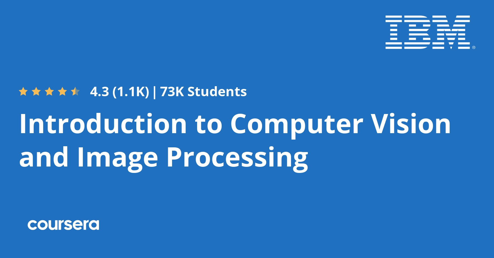

Welcome to my projects section.
Here you will find selected academic and technical projects highlighting
my experience in computer vision, medical imaging, software development,
and applied artificial intelligence.
Image Processing Intern – Quantel Medical (Lumibird Group)
Feb 2025 – Aug 2025
Contributed to the development of advanced image processing solutions for ophthalmic diagnostic systems,
focusing on image enhancement and automation of clinical assessments related to dry eye syndrome.
Main contributions:
• Enhanced fluorescence and white-light images by reducing optical artifacts and improving clarity.
• Automated key diagnostic measurements related to tear film stability and ocular surface analysis.
• Developed detection and classification algorithms for ophthalmic surface anomalies.
• Optimized camera acquisition parameters for clinical protocols.
• Applied segmentation and enhancement techniques for vascular and epithelial feature visualization.
• Collaborated with R&D engineers and clinicians for integration and validation in clinical workflows.
This internship strengthened my ability to combine computer vision, domain knowledge, and software
engineering to deliver clinically relevant tools.
Generation of Synthetic Medical Data
Using GANs
This ongoing project focuses on generating realistic synthetic OCT (Optical Coherence Tomography)
images using Generative Adversarial Networks (GANs).
The objective is to address limited dataset availability and privacy constraints
in medical imaging by producing high-quality synthetic data for research and validation purposes.
The project explores deep learning architectures, training stability strategies,
and evaluation metrics specific to medical image realism.
C++ Application – Image Analysis from Test Bench
Development of a C++ application using OpenCV to analyze images captured from an agricultural test bench.
The system identifies weeds and crops and evaluates the precision of thermal weeding jets.
This solution supports eco-friendly agriculture by reducing herbicide usage while maintaining efficiency.
Ingesting DICOM Data with the Healthcare API
This
Coursera project
introduced me to Google Cloud Healthcare API and the DICOM data model.
I learned how to create datasets, manage DICOM stores, and import/export medical imaging data securely.
De-identifying DICOM Data with the Healthcare API
This
Coursera project
focused on applying de-identification techniques to DICOM datasets,
ensuring patient privacy while maintaining data usability for research.
Image Processing Library – C++
Design and implementation of a structured image processing library in C++.
The project evolved from template-based implementations to an object-oriented Image class structure,
including histogram equalization, convolution filtering, and multi-thresholding operations.
Facial Recognition Security System
Development of a facial recognition-based home security system using Python and OpenCV.
The system identifies individuals in real time and sends alerts when unknown faces are detected,
combining computer vision and basic machine learning techniques.
Image Processing Library – Python (Raspberry Pi)
Implementation of image processing techniques on Raspberry Pi using Python,
including edge detection, thresholding, calibration, and morphological operations
such as erosion and dilation.
License Plate Recognition – Raspberry Pi
Real-time license plate recognition system using Raspberry Pi and OpenALPR.
The system captures images via PiCamera and processes them to detect and recognize
license plate numbers with confidence scores.
Introduction to Computer Vision and Image Processing

Study of core concepts including filtering, edge detection, feature extraction,
and basic object recognition with practical applications.
Introduction to network security fundamentals, phishing awareness, and
best practices for personal and professional cybersecurity.
Create Your Website with HTML5 and CSS3
OpenClassrooms course
focused on modern web development principles and responsive design.
Objectif IA – Introduction to Artificial Intelligence
Overview of AI fundamentals, machine learning, deep learning, and
the ethical and societal impacts of artificial intelligence.